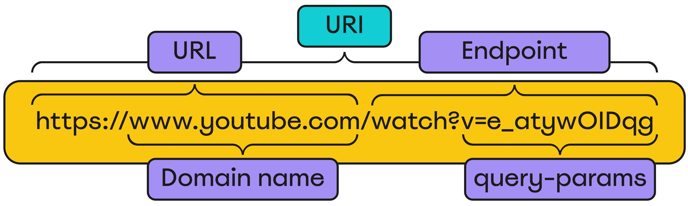
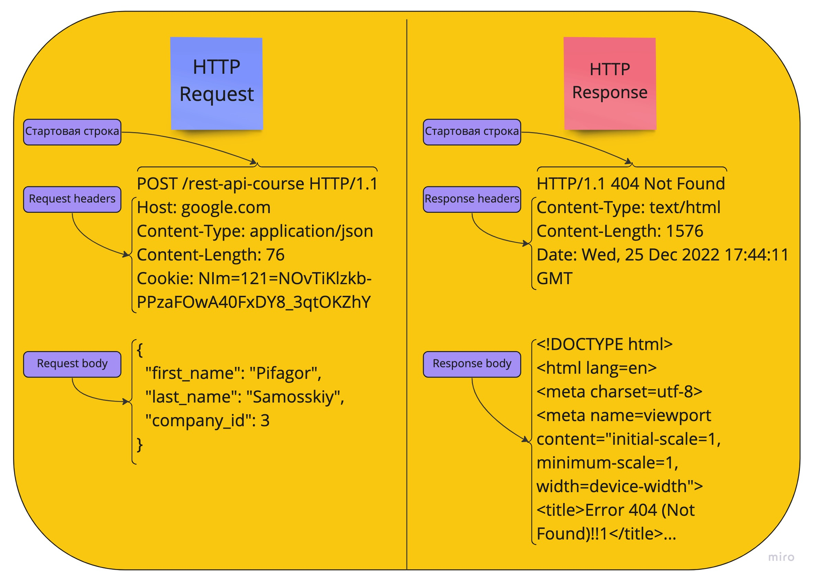
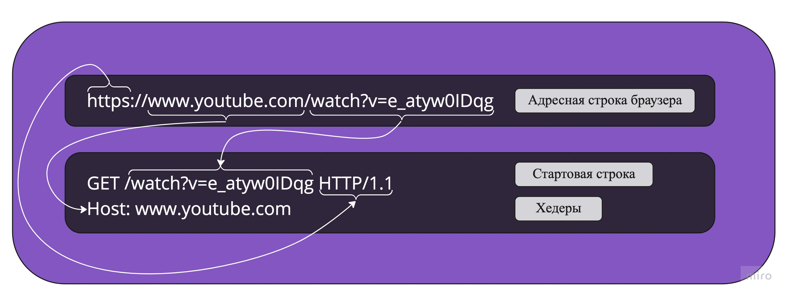

HTTP — широко распространённый протокол передачи данных, изначально предназначенный для передачи гипертекстовых документов
(то есть документов, которые могут содержать ссылки, позволяющие организовать переход к другим документам).
Аббревиатура HTTP расшифровывается как HyperText Transfer Protocol, «протокол передачи гипертекста».
Протокол HTTP предполагает использование клиент-серверной структуры передачи данных. Клиентское приложение формирует запрос и отправляет
его на сервер, после чего серверное программное обеспечение обрабатывает данный запрос, формирует ответ и передаёт его обратно клиенту.
После этого клиентское приложение может продолжить отправлять другие запросы, которые будут обработаны аналогичным образом.
Задача, которая традиционно решается с помощью протокола HTTP — обмен данными между пользовательским приложением,
осуществляющим доступ к веб-ресурсам (обычно это веб-браузер) и веб-сервером.
Также HTTP часто используется как протокол передачи информации для других протоколов прикладного уровня, таких как SOAP, XML-RPC и WebDAV.
В таком случае говорят, что протокол HTTP используется как «транспорт».
API многих программных продуктов также подразумевает использование HTTP для передачи данных — сами данные при этом могут иметь любой формат,
например, XML или JSON.
Как правило, передача данных по протоколу HTTP осуществляется через TCP/IP-соединения.
Серверное программное обеспечение при этом обычно использует TCP-порт 80 (и, если порт не указан явно,
то обычно клиентское программное обеспечение по умолчанию использует именно 80-й порт для открываемых HTTP-соединений),
хотя может использовать и любой другой.
На подавляющем большинстве сайтов, если обратить внимание на URL, можно заметить, что указан не протокол HTTP, а HTTPS.
Буква S в конце наименования протокола означает "secure" и, по сути, является надстройкой безопасности к данному протоколу.
С 2015 года под буквой S подразумевается протокол шифрования TLS. До 2015 года использовался протокол шифрования SSL.
Следует помнить, что для ресурсов, использующих протокол HTTP, по умолчанию используется порт 80, а для протокола HTTPS – порт 443.
По сути, протокол TLS выполняет следующие функции:
Шифрование - передача информации происходит в зашифрованном виде, что делает невозможной кражу информации и отслеживание действий пользователя на других ресурсах.
Аутентификация - пользователю гарантируется, что он переходит на официальный сайт, а не на его дубликат.
Сохранение данных - в случае попытки злоумышленника взломать систему, информация об этом сохраняется.
Версии HTTP
Стандарт HTTP/0.9
Стандарт HTTP/1.0
Стандарт HTTP/1.1 - активно используется в настоящее время.
Стандарт HTTP/2.0 - многие новые проекты переходят на эту версию. Технологии, такие как GraphQL и gRPC,
часто работают на этой версии протокола HTTP.
Также существует экспериментальная версия HTTP/3.0, которая является наследницей HTTP/2.0.
Особенность этой версии заключается в использовании экспериментального протокола QUIC. QUIC, в свою очередь,
является надстройкой к протоколу транспортного уровня UDP. QUIC делает UDP более безопасным, но при этом он все равно работает быстрее, чем TCP.
Методы HTTP
HTTP поддерживает 9 методов запросов, каждый из которых выполняет определенную функцию:
GET - запрос информации о ресурсе.
POST - запрос на создание ресурса (например, регистрация пользователя).
PUT - запрос на обновление ресурса (обновляет ресурс полностью).
PATCH - запрос на обновление ресурса (частично обновляет ресурс).
DELETE - запрос на удаление ресурса.
OPTIONS - запрос информации о поддерживаемых методах у ресурса (в заголовке Allow представляются поддерживаемые методы).
HEAD - запрос заголовков ресурса (аналогичен методу GET, но без получения тела ответа).
CONNECT - преобразование соединения в прозрачный TCP/IP-туннель, например, для соединения с сайтом через SSL.
TRACE - позволяет клиенту видеть, что происходит на каждом этапе между клиентом и сервером.
На практике чаще всего используются первые пять методов HTTP (GET, POST, PUT, PATCH, DELETE) для реализации так называемого акронима CRUD (Create, Read, Update, Delete).
В его рамках:
Метод GET реализует букву R (Read - читать).
Метод POST реализует букву C (Create - создавать).
Методы PUT и PATCH реализуют букву U (Update - обновлять).
Метод DELETE реализует букву D (Delete - удалять).
На собеседовании могут спросить: "Какие методы, кроме основных, Вы знаете?". Достаточно упомянуть методы HEAD и OPTIONS и понимать,
какую информацию они предоставляют.
*

URI - состоящий из полного пути к ресурсу, является абсолютным URI. На примере с картинкой, URL + Endpoint - является абсолютным URI
На примере с картинкой, относительным URI является например - /watch?v=e_atyw0IDqg или https://www.youtube.com
HTTP Request
Request — это отправляемый запрос на сервер. Request состоит из следующих частей:
-
Стартовая строка, в которой указывается:
- Протокол и версия протокола
- Метод запроса
- URI
- Request headers — заголовки со служебной, уточняющей и дополнительной информацией в формате "ключ: значение".
- Request body — тело запроса, в котором передаются необходимые данные для внесения изменений в БД.
Query-параметры могут передаваться в URI в формате "ключ=значение".
Cookie могут передаваться в request headers в формате "ключ: значение". Это один из способов идентификации пользователя и сохранения информации о его предпочтениях.
Примечание 1.
В методах GET, HEAD, OPTIONS request body не используется.
Примечание 2.
В методе DELETE body может присутствовать, но также может и отсутствовать. Это зависит от реализации разработчика.
Примечание 3.
В версиях HTTP 1.1 и выше заголовок Host является обязательным, и в нем указывается доменное имя. В стартовой строке указываются протокол, метод и эндпоинт. Ниже есть пример, как это выглядит.
Примечание 4. В стартовой строке может содержаться как абсолютный URI, так и относительный URI (только эндпоинт). Чаще всего в стартовой строке передается относительный URI (эндпоинт).
Примечание 5. Технически, query-параметры могут отправляться с любым методом HTTP. Чаще всего они отправляются с методом GET и, в основном, используются для фильтрации и сортировки данных.
HTTP Response
Response — это ответ, который мы получаем от сервера. Response состоит из следующих частей:-
Стартовая строка, в которой указывается:
- Протокол и версия протокола
- Статус-код
- Пояснение к статус-коду
- Response headers — заголовки со служебной, уточняющей и дополнительной информацией в формате "ключ: значение".
- Response body — тело ответа.
Cookie могут передаваться в response headers, в заголовке Set-cookie. 
Давайте подробнее рассмотрим, как из адресной строки при запросе формируется HTTP запрос:
Для пользователя удобно использовать адресную строку в браузере, чтобы обращаться к веб-ресурсам. Но на техническом уровне запрос выглядит несколько иначе. Рассмотрим, как это работает:
- В начале запроса мы указываем протокол HTTP или HTTPS. Данная информация помещается в стартовую строку.
- Далее, мы указываем доменное имя www.youtube.com. Эта информация записывается в заголовок Host.
- Далее, следует эндпоинт с query-параметрами. Данная информация также помещается на стартовую строку
- Поскольку мы отправляем запрос из адресной строки браузера, метод запроса по умолчанию устанавливается как GET.
Cтатус-коды
Статус-код приходит от сервера в ответ на запрос и представляет собой трехзначное число в диапазоне от 100 до 599.
Это число несет информационный характер о результате обработки запроса сервером.
В протоколе HTTP статус-коды подразделяются на пять категорий:
100-199: Информационные ответы.
200-299: Успешная обработка запроса.
300-399: Перенаправление запроса.
400-499: Ошибки клиента.
500-599: Ошибки сервера.
Обобщенно, ответы со статус-кодами в диапазоне от 200 до 399 считаются успешными.
Хотя разработчики и определяют статус-коды для своих приложений, хорошей практикой считается следование стандартам разработки API. Например:
200 OK: Указывает на успешную обработку запроса, когда сервер вернул ожидаемую информацию.
201 Created: Сообщает о том, что данные, отправленные клиентом, были успешно добавлены в базу данных.
Если при регистрации пользователя сервер возвращает ответ 200 OK вместо 201 Created, это не обязательно ошибка.
Но, как правило, следование стандартам считается наилучшей практикой. При тестировании API тестировщикам стоит опираться на документацию и здравый смысл.
Если документация указывает на ожидаемый ответ 200 OK, значит, таково решение разработчика. Но в таких ситуациях стоит уточнять документацию.
Наиболее распространенные статус-коды, которые желательно знать:
2XX - Успешные ответы:
200 ОК - Успешный запрос.
201 Создан - сервер подтвердил создание ресурса.
3XX - Ответы о перенаправлении:
300 Множественный выбор - запрос клиента имеет несколько возможных ответов.
301 Перемещено навсегда - искомый ресурс был навсегда перемещен по другому URL. Пользователи и боты будут перенаправлены на этот новый URL.
4XX - Ошибки клиента:
400 Плохой запрос - клиент отправил запрос с ошибочными, неполными или недопустимыми данными.
401 Неавторизован - требуется авторизация для доступа к ресурсу.
403 Запрещено - клиент не имеет прав доступа к ресурсу.
404 Не найдено - сервер доступен, но искомая страница не найдена или не существует.
405 Метод не поддерживается - метод запроса понятен, но не допустим для конкретного ресурса. При методах GET и HEAD этот код ошибки никогда не должен возвращаться.
409 Конфликт - запрос конфликтует с внутренними операциями сервера (например, такой пользователь уже существует в базе данных).
5XX - Ошибки сервера:
500 Внутренняя ошибка сервера - сервер столкнулся с проблемой, которую не смог обработать.
501 Не реализовано - говорит о том, что сервер не поддерживает или не распознает сам метод запроса (например, некий гипотетический метод FOO).
502 Bad Gateway - сервер действует как прокси или шлюз и получает недействительный ответ от вышестоящего сервера.
503 Служба недоступна - сервер временно недоступен или перегружен.
504 Gateway Timeout - сервер, действуя как шлюз или прокси, не дождался ответа от вышестоящего сервера и не может завершить обработку запроса.
505 Версия HTTP не поддерживается - сервер не поддерживает версию HTTP, указанную в запросе.
На собеседовании могут спросить, чем 502-й статус-код отличается от 504-го?
В случае 502-го статус-кода при запросе к серверу наш сервер обратился к вышестоящему серверу для получения информации и
получил от него некорректный ответ. А в случае с 504-м наш сервер не дождался ответа от вышестоящего сервера в принципе.
Headers
Заголовки носят служебный характер. В них указывается информация для корректной работы системы.
Заголовки разделяются на 4 типа:
Заголовки запросов (Request headers)
Заголовки ответов (Response headers)
Основные заголовки (General headers)
Заголовки сущности (Entity headers)
Request headers используются при отправке запроса на сервер. Служат для передачи дополнительной, уточняющей и служебной информации.
Некоторые заголовки, например, User-Agent, отправляются только в request headers.
Response headers используются при отправке ответа от сервера к клиенту. Также служат для передачи дополнительной,
уточняющей и служебной информации. Некоторые заголовки могут быть отправлены только в response headers. Например, Set-cookie,
которые сервер генерирует и отправляет клиенту для того, чтобы клиент сохранил данные куки и при последующих запросах присылал их для идентификации
и аналитических целей.
В группу General headers входят такие заголовки, как Date, Connection и т.п. Данная группа заголовков не описывает содержимое запроса
и является общей для клиента и сервера.
В группу Entity headers входят заголовки, служащие для описания содержимого запросов.
Entity headers отправляются вместе с request headers или response headers. Большинство entity headers начинаются с Content-. Например:
Content-Length
Content-Language
Content-Type
Content-Location
Link и т.д.
На практике, как правило, разделяют запросы на request headers и response headers.
Заголовки представляют из себя набор ключей и значений key: value.
Далее разберем некоторые распространенные заголовки.
User-Agent
User-Agent - этот заголовок отправляет серверу информацию о том, с какого устройства или браузера осуществляется запрос.Пример заголовка User-Agent:
User-Agent: Mozilla/5.0 (Macintosh; Intel Mac OS X 10_15_7) AppleWebKit/537.36 (KHTML, like Gecko) Chrome/107.0.0.0 Safari/537.36.
Данная информация может использоваться в аналитических целях. Например, компании могут анализировать, с каких устройств, браузеров или операционных систем пользователи посещают их ресурс. Также благодаря этому заголовку, когда пользователь заходит на сайт с целью скачать приложение, система определяет его устройство и предлагает соответствующую версию программы, подходящую для его операционной системы. Для пользователя это может выглядеть как магия, но на самом деле за всем этим стоит заголовок User-Agent:)
Host
Host - данный заголовок указывает, к какому конкретному веб-сайту на HTTP-сервере следует обратиться.На одном сервере может быть размещено множество различных веб-сайтов, и заголовок Host помогает серверу определить, к какому из них обращается запрос.
В качестве значений для этого заголовка могут выступать как доменные имена, так и IP-адреса.
Стоит отметить, что заголовок Host является обязательным для HTTP версии 1.1 и выше.
Примеры заголовка Host:
Host: www.youtube.com
Host: localhost:8000
Referer и Referrer-policy
Referer — данный заголовок используется для указания источника, откуда был отправлен текущий запрос.Если, например, пользователь кликнет на логотип Stepik в верхнем левом углу какой-либо страницы, переходя на главную, к запросу будет добавлен заголовок вида Referer: https://stepik.com/lesson....
Referrer-policy — этот заголовок определяет, какой именно информацией заполнять заголовок Referer. Это может быть, например, только URL или полный URI. Этот заголовок важен с точки зрения безопасности и конфиденциальности, так как позволяет контролировать, какие данные и в каких обстоятельствах будут передаваться в Referer.
Если говорить простыми словами, Referrer-policy диктует, какие данные и в каких случаях должны передаваться в Referer.
Примеры заголовка Referrer-policy:
Referrer-Policy: no-referrer - заголовок Referer не указывается
Referrer-Policy: no-referrer-when-downgrade - заголовок Referer не указывается при переходе с HTTPS на HTTP
Referrer-Policy: origin - в Referer указывается только URL
Referrer-Policy: origin-when-cross-origin - при переходах внутри одного ресурса по HTTPS в Referer указывается URI. В иных случаях - только URL.
Referrer-Policy: same-origin - при переходах внутри одного ресурса в Referer указывается URI. При переходах на другой ресурс Referer не передается.
Referrer-Policy: strict-origin - при переходах с HTTPS на HTTP Referer не передается. В ином случае передается URL.
Referrer-Policy: strict-origin-when-cross-origin - при переходах внутри одного ресурса по HTTPS передается URI. При переходах по HTTPS на сторонние ресурсы - передается URL. При переходе на сторонний ресурс с HTTPS на HTTP - Referer не передается.
Referrer-Policy: unsafe-url - всегда передается URI, вне зависимости от безопасности ресурса.
Accept
Accept- заголовок, который позволяет клиенту указать, какие типы медиафайлов он может принять и обработать. В данном заголовке могут быть указаны несколько типов, перечисленные через запятую.Примеры заголовка Accept:
Accept: */* - клиент может принять и обработать любой формат.
Accept: text/html - клиент может принять и обработать только формат HTML
Accept: text/html, application/json - клиент может принять и обработать формат HTML и JSON
Authorization
Authorization- Используется для идентификации пользователя. Является уникальным для каждого пользователя, выдается системой после успешной идентификации пользователя. Хранится на стороне клиента и отправляется серверу для аутентификации. Бывают разные способы аутентификации.Пример заголовка Authorization:
Authorization: Bearer 12iDASnf_dsASk32...
Set-Cookie
Set-Cookie - Сервер генерирует куки и отправляет их клиенту чтобы клиент хранил их и отправлял при последующих запросах. Куки передаются в формате name=value.Куки - это небольшие фрагменты данных, которые хранятся как на стороне клиента, так и на стороне сервера, и служат в целях идентификации. Куки передаются вместе с запросом в заголовке Cookie для поддержания доступа клиента к ресурсу. Куки могут использоваться и для других целей, например, для хранения предпочтений на сайте или отслеживания клиентской сессии.
Пример заголовка Set-Cookie:
Set-Cookie: NIm=NOvTiKlzkb_PPzaFOwA40FxDY8_3qtOKZhY;
Set-Cookie: csrftoken=un151mMlOp38;
У заголовка Set-Cookie, существуют атрибуты служащие для управления куками. Рассмотрим распространенные атрибуты:
Expires=‹дата и время› - устанавливает максимальную дату и время жизни куки.
Max-Age=‹кол-во секунд› - устанавливает максимальное время жизни кук в секундах. Имеет приоритет перед Expires.
Domain=‹доменное имя› - указывает на какой хост должны отправляться куки.
Path=‹/эндпоинт› - указывает по какому эндпоинту должны отправляться куки. Если значение Path=/, значит куки отправляются по всем эндпоинтам.
Secure - означает, что куки могут отправляться только на ресурс использующий защищеный протокол HTTPS.
HttpOnly - предназначен для защиты от кражи кук вредоносным скриптом JavaScript. Блокирует доступ JavaScript к кукам.
SameSite=Strict - куки передаются только при переходах внутри одного и того же ресурса. Например: если vk.com отправил нам куки с данным атрибутом, и мы переходим с google.com на vk.com, то при этом переходе куки не будут отправлены. Но при последующих переходах внутри vk.com куки будут прилагаться к запросам.
SameSite=Lax - куки передаются при межсайтовых переходах по прямой ссылке. Например, если переходим с google.com на vk.com, куки будут отправлены. Отличие атрибута SameSite=Lax в том, что куки отправляются только при переходе по прямой ссылке. Так, если с google.com в разделе "картинки" мы скачиваем картинку с другого сайта, куки передаваться не будут. В случае отсутствия атрибута SameSite, по умолчанию с 2019 года применяется значение SameSite=Lax.
SameSite=None; Secure - данный атрибут снимает ограничения по передаче куки. Данный атрибут может передаваться только по защищенному протоколу HTTPS и с атрибутом Secure, который мы рассматривали выше.
Примеры заголовка Set-Cookie с атрибутами:
Set-Cookie: NIm=NOvTiKlzkb_PPzaFOwA40FxDY8_3qtOKZhY; SameSite=None; Secure
Set-Cookie: csrftoken=un151mMlOp38; Max-Age=360000; SameSite=Strict; Domain=vk.com; HttpOnly
Примечание 1.
Куки отправленные сервером без атрибута Expires или Max-Age - являются сессионными и существуют во время текущей сессии, пока открыт браузер.
Примечание 2.
Куки в которых присутствует атрибут Expires или Max-Age - являются постоянными.
Cookie
Cookie — данный заголовок используется клиентом для отправки серверу кук, полученных через Set-Cookie.
Заголовок содержит в себе одну или несколько пар в формате name=value. Пары кук разделяются символом ;.
Пример заголовка Cookie:
Cookie: NIm=NOvTiKlzkb_PPzaFOwA40FxDY8_3qtOKZhY; csrftoken=un151mMlOp38;
Content-Type
Сontent-Type - используется для информирования о формате содержимого body, отправляемого на сервер или получаемого от сервера.Примеры заголовка Content-Type:
Content-Type: application/json
Content-Type: application/xml
Content-Type: application/x-www-form-urlencoded
Content-Type: text/html
Cache-Control
Если говорить простыми словами, кэш — это буфер с быстрым доступом. Можно представить кэш как папку с копиями документов и файлов или как мини-базу данных, где хранится информация, которая часто используется и редко обновляется. Преимуществом кэша является значительное увеличение производительности ресурса благодаря уменьшению нагрузки на сервер и быстрому доступу к запрашиваемым данным. Однако у кэша есть и недостатки: ограниченный объем памяти и риск получения устаревшей информации.Существует множество видов кэшей.
Спецификация HTTP 1.1, ради безопасности и конфиденциальности, разделяет кэши на две группы: общие (Shared) и необщие (Non-Shared).
Общие (или публичные) кэши — это кэши, к которым есть доступ у большого количества людей. К ним относятся кэши провайдеров, кэши компаний и так далее. Общий кэш выступает промежуточным звеном между клиентом и сервером, фактически являясь прокси-сервером.
Необщий (или приватный) кэш — это кэш, доступ к которому имеет только один пользователь, например, кэш браузера.
В протоколе HTTP существует несколько заголовков, предназначенных для управления кэшированием:
Cache-Control — ключевой и основной заголовок для управления кэшем. Появился в версии HTTP 1.1 и имеет приоритет перед Expires и Pragma.
Expires — предшественник Cache-Control. Он менее гибкий и, в основном, используется для обратной совместимости со старыми браузерами.
Pragma — устаревший заголовок, который уже редко используется в современных приложениях.
Заголовок Cache-Control является общим (General header). Управление кэшированием с его помощью происходит как при запросах со стороны клиента, так и при ответах со стороны сервера.
Распространенные атрибуты Cache-Control, в клиентских запросах:
max-age=‹секунды› - клиент готов принять ответ, который можно закэшировать на указанное время.
max-stale=‹секунды› - клиент готов принять устаревший ответ, в котором время устаревания не превышает указанное количество секунд. Данный атрибут может быть полезен когда сервер не доступен.
min-fresh=‹секунды› - клиент готов принять ответ, который будет актуальным указанное кол-во секунд.
no-cache - перед использованием закэшированных данных, кэш должен проверить актуальность на сервере.
no-store - запрет на кэширование каких-либо данных о запросе и ответе.
no-transform - запрет на преобразование(конвертацию) данных на стороне кэша.
only-if-cached - клиент готов получить любую закэшированную информацию. Данный атрибут может быть полезен, когда сервер не доступен.
Распространенные атрибуты Cache-Control, в ответах от сервера:
public - данные можно закэшировать в любом кэше (в общем кэше и кэше браузера).
private - данные можно закэшировать только в приватном кэше(в кэше браузера).
max-age=‹секунды›- сервер указывает, на какое время кэшируются данные с момента создания ответа. По сути данным атрибутом, сервер обозначает срок свежести закэшированных данных. Обратите внимание, что время кэширования начинается не с момента получения, а с момента создания контента.
s-max-age - аналогичен max-age, за исключением того, что предназначен для общих кэшей. Если присутствуют одновременно оба атрибута, max-age - будет определять время свежести в кэше браузера, а s-max-age - будет определять время свежести в общем кэше.
no-cache - перед использованием закэшированных данных, кэш должен проверить актуальность на сервере.
no-store - запрет на кэширование каких-либо данных о запросе и ответе.
no-transform - запрет на преобразование(конвертацию) данных на стороне кэша.
must-revalidate - после истечения срока свежести, кэш обязан проверить актуальность данных у сервера.
proxy-revalidate - аналогичен предыдущему, за исключением того, что распространяется на общие кэши.
Обратите внимание на отличия no-store от no-cache. no-store - запрещает кэшировать запросы и ответы, а no-cache - указывает кэшу, что перед тем, как ответить клиенту, он должен сначала обратиться к серверу и убедиться, что информация не поменялась.
Так же, про отличия no-cache от must-revalidate. В случае с no-cache, кэш каждый раз обращается к серверу, даже если срок свежести не истек. В случае с must-revalidate, кэш должен обратиться к серверу только после того, как истек срок свежести.
Connection
Connection - служит для управления соединением между клиентом и сервером.Примеры заголовка Connection:
Connection: keep-alive - соединение между клиентом и сервером не прерывается.
Connection: close - говорит о том, что сервер или клиент хотят прекратить связь.
Accept-Language
Accept-Language представляет информацию о языке, которому отдаёт предпочтение пользователь.Пример заголовка Accept-Language:
Accept-Language: ru-RU, ru, en-US, en — система выберет язык в порядке убывания.
Сначала система попробует отобразить информацию на русском языке. Если не удастся, предоставит информацию на английском языке.
Если и на английском языке не удастся, в этом случае предоставит язык, установленный по умолчанию. _________________________________________________________________________________________
На самом деле, хедеров довольно много. Выше приведены некоторые из основных. Также бывают кастомные хедеры, созданные разработчиками для реализации функционала системы. Как правило, они начинаются с атрибута x-.
Также хочу обратить внимание, что Content-Type используется не для выбора формата ответа, а лишь для информирования о том, в каком формате был направлен запрос или получен ответ. Для выбора формата используется хедер Accept.
CRUD - методы GET, POST, PUT, PATCH, DELETE
Безопасные и идемпотентные методы
Идемпотентные методы - это методы, которые либо не изменяют состояние в базе данных, либо изменяют состояние только при первом запросе. В случае повторной отправки идентичного запроса, состояние в базе данных не изменяется. Идемпотентными методами являются: GET, PUT, DELETE, HEAD и OPTIONS. POST и PATCH не входят в эту группу. Безопасные методы - это методы, которые не изменяют состояние в базе данных (read only методы). Примечательно, что все безопасные методы также являются идемпотентными. Безопасными методами являются: GET, HEAD и OPTIONS. Отличие идемпотентных методов от безопасных заключается в том, что безопасные методы не меняют состояние базы данных, в то время как идемпотентные методы могут внести изменения при первом запросе, но последующие идентичные запросы уже не будут менять состояние в базе данных. Пример №1: нарушение идемпотентности методов. Идемпотентная реализация метода DELETE: при первом запросе на удаление http://example.com/users/5 вернулся 204 No Content, а дальнейшая повторная отправка аналогичного запроса возвращает 404 Not Found. Некорректная реализация метода DELETE: при каждом запросе на удаление http://example.com/users, удаляется последний зарегистрированный пользователь. Пример №2: нарушение безопасности методов. Безопасная реализация метода GET: при отправке GET запроса http://example.com/users/5/balance возвращается баланс пользователя с id=5. Реализация метода GET с нарушением безопасности метода: разработчики реализовали query-параметр update_balance и теперь клиент может обновлять свой баланс отправляя http://example.com/users/5/balance?update_balance=10. В данном примере нарушена безопасность метода GET, так как клиент меняет состояние на серверной стороне при первом запросе. При этом здесь не нарушена идемпотентность, так как повторная отправка аналогичного запроса не будет менять баланс. Реализация метода GET с нарушением безопасности и идемпотентности: разработчики реализовали query-параметры plus и minus. Теперь клиент может увеличить свой баланс отправляя http://example.com/users/5/balance?plus=10 и уменьшить свой баланс отправляя http://example.com/users/5/balance?minus=10. В данном примере нарушена и безопасность, и идемпотентность метода GET, так как клиент меняет состояние на серверной стороне при каждом запросе. Таблица безопасных и идемпотентных методов:
GET POST PUT PATCH DELETE
Безопасный + - - - -
Идемпотентный + - + - +